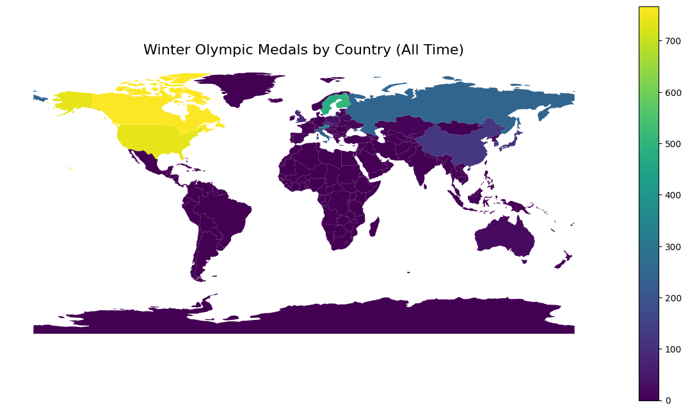

import pandas as pd
import geopandas as gpd
from IPython.display import display
import matplotlib.pyplot as plt
wolympics_df = pd.read_csv('data/winter_olympics_medals.csv')
wolympics_df = wolympics_df[~wolympics_df['year'].isin([2012,2016,2020])]
wolympics_df = wolympics_df[wolympics_df["type"] == "Winter"]
bios_df = pd.read_csv('data/bios.csv')
pop_df = pd.read_csv('data/populations.csv')
medals_df = wolympics_df[wolympics_df["medal"].notna()].copy()
world = gpd.read_file("data/worldmap.json")
region_lookup = world[["iso_a3", "continent", "region_un", "subregion"]].copy()The Winter Olympics are built for snow, ice and mountains. Unsurprisingly, countries like Norway, Canada and Switzerland dominate the competition year after year.
However, Australia seems to be an exception to this story.
 Source: The Guardian
Source: The Guardian
In recent years, Australia’s performance at the winter olympics has been consistently improving, with them putting up the best performance yet this year, obtaining a total of 6 medals (at the time of writing this blog), beating the previous record by 2 medals set in 2022. While this is by no means as impressive as the 37 medals currently won by the first place, Norway, Australia is placed 14th on the leaderboard. Notably, all 13 countries which have performed better than Australia are in the Northern Hemisphere.
According to The Guardian article, it is said that their success has come “through clever strategy and targeted resource allocation.” Out of the 16 different disciplines in the winter olympics, all of Australia’s medals came from two: freestyle skiing (moguls), and snowboarding.
This lead me to ask:
Do traditionally “wintry” countries succeed because they diversify across many disciplines, while warmer nations survive through strategic specialisation? And is diversification a luxury available only to large, cold countries?
Using historical Winter Olympics data, this analysis explores whether geography shapes not just who wins, but how they win.
Setup
Who dominates the Winter Olympics?
Before examining the effects of specialisation, we will first look at which countries are the most successful, based on the number of total trophies they have won. If geography truly shapes winter sport success, we should expect to see clear clustering among cold, mountainous nations with strong winter sport presence.
country_totals = (
medals_df.groupby("noc")
.size()
.reset_index(name="medals_total")
.sort_values("medals_total", ascending=False)
)topN = 10
top_countries = country_totals.head(topN).copy()
plt.figure(figsize=(10, 6))
plt.barh(
top_countries["noc"][::-1],
top_countries["medals_total"][::-1]
)
plt.title(f"Top {topN} Countries by Total Winter Olympic Medals (All Time)")
plt.xlabel("Total medals")
plt.ylabel("")
plt.tight_layout()
plt.show()Looking at the above bar graph, we can see that Canada and the United States dominate, having taken home 767 and 769 medals overall respectively.
Additionally, we can see that the top 10 countries (Canada, USA, Norway, Germany, Finland, Sweden, Soviet Union, Austria, Switzerland and Russia) are in the northern hemisphere, with colder climates and mountainous terrain.
medals_with_region = country_totals.merge(
region_lookup,
left_on="noc",
right_on="iso_a3",
how="left"
)
world_medals = world.merge(
country_totals,
left_on="iso_a3",
right_on="noc",
how="left"
)
world_medals["medals_total"] = world_medals["medals_total"].fillna(0)
ax = world_medals.plot(column="medals_total", legend=True, figsize=(15,8))
ax.set_title("Winter Olympic Medals by Country (All Time)", fontsize=16)
ax.axis("off")
plt.show()
The world map reinforces this pattern visually. Medals are heavily concentrated in North America and Northern Europe, with the United States, Canada, Norway and Russia clearly standing out. Much of Africa, South America, Southeast Asia and Oceania show little to no historical medal presence.
Rather than being evenly distributed across the globe, Winter Olympic success is geographically clustered, with the strongest performers are located in high-latitude regions, where cold climates and mountainous terrain make winter sports both culturally embedded and relatively easier to access.
This geographic clustering suggests that environmental factors may shape not only participation but also the breadth of opportunity across disciplines. Countries with extensive winter infrastructure and long-standing sporting traditions may be better positioned to compete across multiple events, potentially enabling diversification which we will delve deeper into. In contrast to this, nations without natural winter conditions may need to specialise strategically in a smaller set of disciplines.
Whilst the global pattern suggests that geography plays a significant role in success, we will now explore Australia’s steadily increasing success over the past few years, despite its climatic differences.
Is Australia’s rise in the Winter Olympics really attributed to specialisation?
The Guardian attributes Australia’s recent success to “clever strategy and targeted resource allocation,” implying thay Australia doesn’t compete broadly across the various Winter Olympic programs, but instead concentrates its efforts in a narrow set of events.
To test this, we will examine not just medal counts, but how those medals are distributed across events.
country_event = (
medals_df.groupby(["noc", "event"])
.size()
.reset_index(name="medals")
)
div_metrics = (
country_event.groupby("noc")
.agg(
medals_total=("medals", "sum"),
n_events=("event", "nunique"),
top_share=("medals", lambda x: x.max() / x.sum())
)
.reset_index()
)
country_names = (
pop_df[["Country Code", "Country Name"]]
.drop_duplicates()
.rename(columns={"Country Code": "noc", "Country Name": "country"})
)
div_metrics_named = div_metrics.merge(country_names, on="noc", how="left")
# Displaying the noc code if the country name is not available.
div_metrics_named["country"] = div_metrics_named["country"].fillna(div_metrics_named["noc"])
div_metrics_named = div_metrics_named[
["country", "medals_total", "n_events", "top_share"]
]
div_metrics_named.sort_values("medals_total", ascending=False).head(10)| country | medals_total | n_events | top_share | |
|---|---|---|---|---|
| 5 | Canada | 767 | 63 | 0.342894 |
| 42 | United States | 739 | 63 | 0.219215 |
| 28 | Norway | 579 | 68 | 0.103627 |
| 18 | GER | 520 | 67 | 0.069231 |
| 13 | Finland | 504 | 43 | 0.315476 |
| 38 | Sweden | 478 | 52 | 0.368201 |
| 41 | URS | 440 | 32 | 0.381818 |
| 1 | Austria | 336 | 46 | 0.083333 |
| 36 | SUI | 313 | 44 | 0.178914 |
| 34 | Russian Federation | 246 | 53 | 0.174797 |
The above table shows the country, the total number of medals they obtained, the number of different events they participated in, and the proportion of medals which were won in each country’s strongest event.
From this, we can actually see that Canada and the United States attribute a significant portion of their success to a single event. Around 34% of Canada’s medals come from its strongest event, while the United States concentrates about 22% in one area. Sweden and the former Soviet Union show even higher concentration levels, with roughly 37% and 38% of their medals tied to a single event. They suggest that sustained success is often built around core strengths rather than evenly distributed performance across all events.
By contrast, countries such as Germany and Norway distribute their success far more evenly. Germany’s top event accounts for just 7% of its medals, and Norway’s for about 10%, despite both nations medalling across nearly 70 different events. Austria follows a similar pattern, with only 8% concentration in its strongest event. These countries are not defined by a dominant niche but by sustained competitiveness across the programme.
We can see that there is a lot of geographic clustering. Canada and the United States are part of North America, while the remaining dominant nations are almost entirely European. Many of these countries, such as Austria and Switzerland, are highly mountainous, while others like Norway, Finland and Sweden benefit from long, harsh winters and strong winter sport traditions.
aus_events = (
country_event[country_event["noc"] == "AUS"]
.sort_values("medals", ascending=False)
.head(10)
)
display(
aus_events.style.set_caption("Australia - Top 10 Events"),
)| noc | event | medals | |
|---|---|---|---|
| 1 | AUS | 5,000 metres Relay, Men (Olympic) | 4 |
| 3 | AUS | Aerials, Women (Olympic) | 4 |
| 7 | AUS | Moguls, Men (Olympic) | 3 |
| 5 | AUS | Halfpipe, Men (Olympic) | 2 |
| 6 | AUS | Halfpipe, Women (Olympic) | 2 |
| 0 | AUS | 1,000 metres, Men (Olympic) | 1 |
| 2 | AUS | Aerials, Men (Olympic) | 1 |
| 4 | AUS | Cross, Men (Olympic) | 1 |
| 8 | AUS | Moguls, Women (Olympic) | 1 |
| 9 | AUS | Skeleton, Women (Olympic) | 1 |
aus_events = (
country_event[country_event["noc"] == "AUS"]
.sort_values("medals", ascending=False)
)
top_share_aus = aus_events["medals"].iloc[0] / aus_events["medals"].sum()
print(f"The top event accounts for {top_share_aus:.1%} of Australia's Winter Olympic medals.")The top event accounts for 18.2% of Australia's Winter Olympic medals.Australia presents an interesting contrast. Its strongest single event accounts for only 18.2% of total medals, which is actually lower than Canada or Sweden, or the USA. In that sense, Australia is not more concentrated than the dominant powers, but the difference lies instead in scale and breadth. While USA and Canada both specialise in their dominant events, they also accumulate medals across dozens of others. European nations, where snow sports are culturally central, often demonstrate the ability to diversify widely. Success, therefore, does not stem from avoiding specialisation. Rather, it comes from combining strong disciplines as well as the capacity to compete broadly.
Taken together, the tables suggest that specialisation is common across all nations, including the most successful ones.
Do bigger countries tend to specialise more?
pop_long = pop_df.melt(
id_vars=["Country Name", "Country Code"],
var_name="year",
value_name="population"
)
pop_long["year"] = pd.to_numeric(pop_long["year"], errors="coerce")
pop_long = pop_long.dropna(subset=["year"])
pop_long["year"] = pop_long["year"].astype(int)
pop_long = pop_long.rename(columns={"Country Code": "noc"})
medals_with_pop = medals_df.merge(
pop_long[["noc", "year", "population"]],
on=["noc", "year"],
how="left"
)
country_pop = (
medals_with_pop.groupby("noc")["population"]
.median()
.reset_index(name="population_median")
)
div_metrics = div_metrics.merge(country_pop, on="noc", how="left")
div_metrics = div_metrics.dropna(subset=["population_median"]).copy()
div_metrics["size_bucket"] = pd.qcut(
div_metrics["population_median"],
q=3,
labels=["small", "medium", "large"]
)
summary_by_size = (
div_metrics.groupby("size_bucket")[["medals_total", "n_events", "top_share"]]
.median()
.reset_index()
.rename(columns={
"size_bucket": "Country Size",
"medals_total": "Total Medals",
"n_events": "Total Events",
"top_share": "Top Event Share"
})
)
summary_by_size| Country Size | Total Medals | Total Events | Top Event Share | |
|---|---|---|---|---|
| 0 | small | 27.5 | 8.5 | 0.324405 |
| 1 | medium | 19.0 | 7.0 | 0.388839 |
| 2 | large | 126.0 | 24.5 | 0.187398 |
Large countries win far more medals overall. The median large country wins 126 medals across 24.5 events, compared to just 27.5 medals for small countries and 19 for medium sized ones. It is likely that bigger populations likely mean larger talent pools, funding, and broader institutional support, allowing them to earn significantly more medals than smaller countries.
But the more interesting pattern appears in the Top Event Share column.
Small and medium countries concentrate a much larger proportion of their medals in a single event. Medium countries show the highest concentration, with nearly 39 percent of medals coming from their strongest discipline. Small countries are close behind at around 32 percent. By contrast, large countries show far less concentration. Their strongest event accounts for just 19 percent of medals on average.
This suggests that larger countries also tend to diversify, spreading their success across more disciplines, rather than relying heavily on one dominant event. Smaller and medium sized nations, however, appear more dependent on specialisation. When they succeed, it is often because they are particularly strong in one area.
This story aligns with Australia. As a “medium” sized country, it specialises much more than traditional winter countries like Germany or Norway, concentrating a greater share of its medals in a smaller cluster of events.
Conclusion
So does geography determine who wins at the Winter Olympics, or does strategy matter just as much?
The patterns in the data suggest that while geography influences the ease for success, it does not fully determine outcomes. Cold, mountainous nations do dominate overall medal counts and tend to distribute their success across many disciplines. Their scale, infrastructure and winter sport traditions make diversification achievable.
However, Winter Olympic success is not just about a country being good at many disciplines in general. It is shaped by the scale of a country’s sporting capacity, and by the environments where winter sports are easiest to train for. Large countries and wintry regions can afford to diversify across events, while smaller countries and non-traditional winter regions are more likely to concentrate effort into a narrower set of events.
Australia fits within this pattern. Its medals are concentrated in freestyle skiing and snowboarding, rather than spread widely like those of Norway or Germany. Its improvement over time, especially shown this year, reflects a targeted approach operating within structural limits. The results suggest that while geography influences a country’s ability to diversify across disciplines, strategy and specialisation is also a major factor in influencing success.